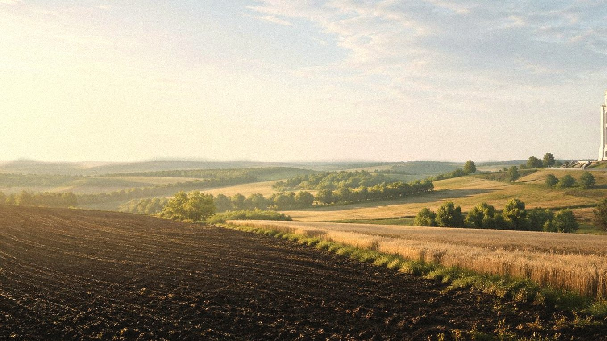

Главная / Курская область / центральная лесостепь

Курская область · центр
Что посадить
Что посадить
в центральной лесостепи
Центральная зона подходит для широкого набора культур. Почвы плодородные, но летом возможны сухие периоды, поэтому для ягодников, капусты и молодых деревьев важны мульча и полив.
Культуры и рекомендации
По умолчанию культуры отсортированы по надёжности: сначала надёжные, затем рекомендованные, с укрытием и рискованные. Сроки ориентировочные — их стоит уточнять по погоде конкретного сезона.
| Культура | Категория | Рекомендация | Где лучше | Сроки | Комментарий |
|---|---|---|---|---|---|
| Вишняплодовое дерево | Плодовые | Надёжно | Защищённый сад | Посадка: апрель или сентябрь. | Одна из основных косточковых культур, если выбрать место без холодной низины. |
| Гороховощная бобовая культура | Овощи | Надёжно | Открытый грунт | Посев: конец апреля — май. | Лучше сеять рано, пока в почве достаточно влаги. |
| Кабачоктыквенная культура | Овощи | Надёжно | Открытый грунт | Посев или высадка: конец мая — начало июня. | На тёплой гряде стабилен, в засуху нуждается в поливе. |
| Капуста белокочаннаяовощная культура | Овощи | Надёжно | Открытый грунт | Рассада: апрель; высадка: май. | Хорошо растёт на питательной почве, но в жару требует влаги. |
| Картофельовощная культура | Овощи | Надёжно | Открытый грунт | Посадка: май; уборка: август–сентябрь. | Даёт стабильный урожай при посадке в мае и защите от пересушки. |
| Крыжовникягодный кустарник | Ягодные | Надёжно | Сад | Посадка: апрель или сентябрь. | Надёжен на светлом месте с регулярной обрезкой. |
| Лук репчатыйовощная культура | Овощи | Надёжно | Открытый грунт | Севок: конец апреля — май; уборка: август. | Хорошо вызревает на открытых чернозёмных грядах. |
| Малинаягодный кустарник | Ягодные | Надёжно | Сад | Посадка: апрель или сентябрь. | Лучше держит урожай при мульче и поливе в период налива ягод. |
| Морковькорнеплод | Овощи | Надёжно | Открытый грунт | Посев: конец апреля — май. | Нужна рыхлая почва и ровная влажность до всходов. |
| Редискорнеплод | Овощи | Надёжно | Открытый грунт | Посев: апрель–май, повторно — август. | Весенние и августовские посевы обычно наиболее качественные. |
| Свёклакорнеплод | Овощи | Надёжно | Открытый грунт | Посев: май, после прогрева почвы. | Устойчива и хорошо набирает сахаристость на солнечном месте. |
| Смородина чёрнаяягодный кустарник | Ягодные | Надёжно | Сад | Посадка: апрель или сентябрь. | Лучше не высаживать на сухой солнцепёк; мульча обязательна. |
| Томаттеплолюбивый овощ | Овощи | Надёжно | Открытый грунт / укрытие | Рассада: март; высадка: конец мая — начало июня. | Ранние сорта успевают в открытом грунте, укрытие помогает на старте. |
| Тыкватыквенная культура | Овощи | Надёжно | Тёплая гряда | Рассада или посев: конец мая — начало июня. | Ранние сорта вызревают при посадке на тёплую питательную гряду. |
| Укроппряная зелень | Зелень | Надёжно | Открытый грунт | Посев: апрель–июль, с повторениями. | Повторные посевы работают лучше, чем один летний посев. |
| Яблоняплодовое дерево | Плодовые | Надёжно | Сад | Посадка: апрель или сентябрь. | Надёжная основа сада, особенно на ровных местах без подтопления. |
| Брокколиовощная культура | Овощи | Рекомендовано | Открытый грунт | Рассада: апрель; высадка: май. | Лучше удаётся в прохладные периоды — весной и ближе к осени. |
| Грушаплодовое дерево | Плодовые | Рекомендовано | Защищённый сад | Посадка: апрель или сентябрь. | Сорта средней зимостойкости требуют защищённого сада. |
| Земляника садоваяягодная культура | Ягодные | Рекомендовано | Садовая гряда | Посадка: май или август. | Хороша на мульче и при регулярном поливе в период плодоношения. |
| Кукуруза сахарнаяовощная культура | Овощи | Рекомендовано | Солнечный участок | Посев: май; уборка: август. | Тепла обычно хватает, но в сухую погоду нужен полив. |
| Огурецтеплолюбивый овощ | Овощи | Рекомендовано | Открытый грунт / укрытие | Рассада: май; высадка: конец мая — июнь. | В открытом грунте удаётся, но укрытие снижает стресс от холодных ночей. |
| Сливаплодовое дерево | Плодовые | Рекомендовано | Сад | Посадка: апрель или сентябрь. | Нужно место с хорошим дренажем и зимостойкие сорта. |
| Фасоль кустоваяовощная бобовая культура | Овощи | Рекомендовано | Открытый грунт | Посев: конец мая — начало июня. | Высевают после устойчивого тепла; в сухую погоду поливают во время цветения. |
| Баклажантеплолюбивый овощ | Овощи | С укрытием / уходом | Теплица | Рассада: февраль–март; высадка: конец мая. | Теплица или плёночный тоннель заметно повышают урожай. |
| Виноград укрывнойягодная лиана | Ягодные | С укрытием / уходом | Южный склон под укрытием | Посадка: май; укрытие лозы — октябрь. | Ранние сорта возможны на южной стене, лоза зимует под укрытием. |
| Перец сладкийтеплолюбивый овощ | Овощи | С укрытием / уходом | Теплица или тёплая гряда | Рассада: февраль–март; высадка: конец мая. | Лучше вести в теплице или под дугами до устойчивого тепла. |
| Абрикосплодовое дерево | Плодовые | Рискованно | Экспериментальный сад | Посадка: весна; цветение требует защиты от заморозков. | Плодовые почки и цветки часто страдают от погодных качелей. |
| Персикплодовое дерево | Плодовые | Рискованно | Экспериментальный сад | Посадка: весна; зимняя защита обязательна. | Как садовая культура нестабилен, требует укрытия и очень тёплого места. |
По выбранным фильтрам культур не найдено.